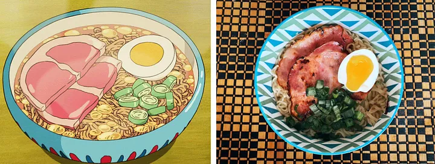

Ham and Egg Ramen From Ponyo

The goldfish princess from "Ponyo" has two wishes: to become human and to consume all the ham in the world. When Sosuke's mom serves the two young children her quick and easy ham ramen, they gape at it in sheer amazement-as will you.
Ingredients
- 1 tbsp of vegetable oil
- 2 slices of thick deli meat
- 1 soft=boiled egg
- 1 packet of instant ramen (your flavor of choice)
- chopped green onion for garnish
Directions
- Heat vegetable oil in a medium skillet over medium heat.
- Once hot, place ham slices in the pan and fry until the edges are crisped. Remove the pan from the heat and set the ham aside.
- Follow directions on the instant ramen packet to make the ramen.
- Pour into a bowl for serving and top with the ham slices, halved soft-boiled egg, and green onions.
- Serve to your son and his screaming goldfish friend.
Tip: For a perfectly jammy soft-boiled egg, place the eggs in a pot of boiling water for 6 minutes and immediately submerge them in an ice bath to halt any cooking.